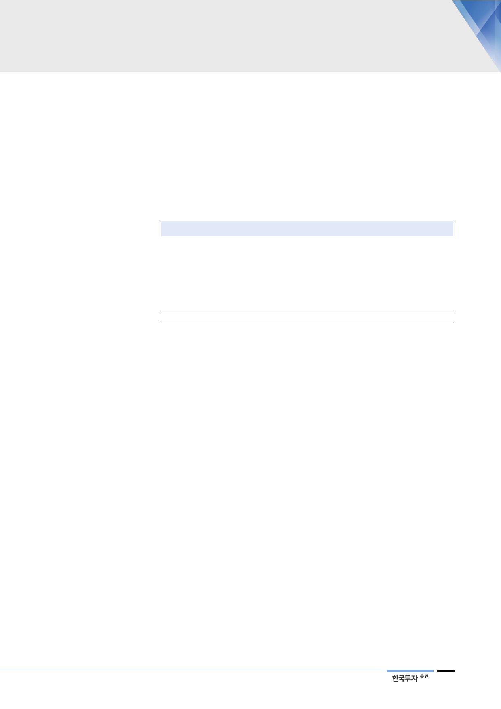

차후 임상 진척도에 따라
파이프라인 가치상승 기대
2. SK바이오팜 가치 4.9조원으로 평가
우리는 SK바이오팜의 파이프라인 가치를 4.9조원으로 평가한다. 솔리암페톨 가
치 4,520억원, 세노바메이트 3.5조원, 그 외 6개의 파이프라인 합산 가치 9,470
억원을 합산하여 산출했다. 임상이 완료된 솔리암페톨과 세노바메이트를 제외한
기타 파이프라인의 가치는 2024년 예상 시장규모를 기반으로 현재 임상 진행 단
계 등을 고려하여 산출했다. 차후 6개 파이프라인의 임상이 진척을 나타낸다면
기업 가치의 추가적인 상승을 기대할 수 있을 것이다.
<표 4> 파이프라인 가치
파이프라인
Solriamfetol
Cenobamate
Carisbamate
Relenopride
SKL13865
SKL20540
YKP10461
SKL-PSY/FZ-016
합산가치
자료: SK, 한국투자증권
가치(십억원)
452
3,453
311
57
121
293
166
-
4,853
적응증
수면장애
뇌전증
희귀 뇌전증
과민성대장증후군
집중력 장애
조현병, 인지장애
파킨슨병
조울증
2024 년 시장크기
(백만달러)
1,617
6,325
1,122
1,161
4,427
10,715
6,088
429
임상단계
완료
완료
2상
2상
1상
1상
1상
전임상
현지시간 3월 21일
판매허가 결정
Narcolepsy나 OSA에서
오는 EDS 치료제
3. 솔리암페톨: 판매허가가 임박했다
가장 진행이 빠른 품목으로는 수면장애 신약 솔리암페톨(Solriamfetol, JZP-
110, SKL-N05)이다. 솔리암페톨은 SK바이오팜이 2011년 아일랜드 제약사
Jazz Pharmaceutical(이하 Jazz)에 기술 수출한 품목으로 올해 3월 21일(현지
시간)에 FDA의 최종 판매허가 여부가 결정된다. 판매가 승인될 경우 출시는 올
해 중순 경에 이루어질 전망이다. 미국과 유럽시장은 Jazz가, 아시아는 SK바이오
팜이 직접 판매를 담당하게 되며 생산은 SK바이오텍이 맡게 될 예정이다. SK바
이오팜은 Jazz로부터는 글로벌 매출에 대한 로열티를 수취하게 되며 아시아 시장
은 직접판매를 통해 매출을 인식하고 매출원가 중 일부는 SK바이오텍의 매출로
계상되는 수익구조가 될 것으로 예상한다.
솔리암페톨은 기면증(Narcolepsy, 밤에 잠을 충분히 잤어도 낮에 갑자기 졸음에
빠져드는 증세)이나 OSA(Obstructive Sleep Apnea, 폐쇄수면무호흡증)로 인한
성인의 과도한 주간 졸림증(Excessive Daytime Sleepiness)을 개선해주는 수
면장애 치료제로 일종의 각성제(wake-promoting agent)다. 2012년 8월에는
FDA로부터 희귀의약품으로 지정받았다. 미국수면학회(American Sleep
Association)에 따르면 미국에는 적어도 한 달에 한 번 운전 중에 잠에 빠지는
기면증 환자 수는 250만명에서 350만명에 불과하나 OSA 환자 수는 2,500만명
달하는 것으로 나타났다. 반면 환자가 자신의 증상을 알아차리기 힘들며 생명에
큰 지장이 없다는 OSA의 특성상 OSA 환자들 중 약물을 처방 받는 비중은 10%
이하인 것으로 파악된다.
5